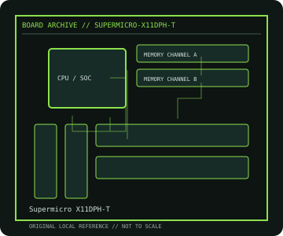

[ INDIVIDUAL COMPONENT // MOTHERBOARDS ]
Supermicro X11DPH-T
Dual-socket Intel Xeon Scalable server/workstation board, 2017. This record documents the named model and its documented variants; confirm the PCB revision, submodel and firmware on the physical unit.

REVISION WARNING: Similar model names and PCB revisions may have different processors, connectors or firmware. Read the silkscreen and assembly code; use the support files for that exact board variant.
Specifications
| Catalog subcategory | Workstation and server boards |
|---|---|
| Exact model / era | Supermicro X11DPH-T — Dual-socket Intel Xeon Scalable server/workstation board, 2017 |
| CPU and socket / SoC | Two LGA3647 Intel Xeon Scalable processors, with supported generation/stepping listed by Supermicro |
| Chipset / platform | Intel C622 |
| Memory | Twelve DDR4 ECC DIMM sockets across two CPUs; RDIMM/LRDIMM and capacity depend on CPU and population tables |
| Slots and connectivity | E-ATX; PCIe 3.0 slots and onboard PCIe expansion, dual 10GbE, dual Gigabit/IPMI management, SATA, NVMe, USB and VGA |
| Firmware | Supermicro BIOS and BMC/IPMI firmware are independent. Follow X11DPH-T CPU support and firmware release notes; identify PCB revision and suffix. |
Compatibility and revision notes
Populate CPU1 first and use matched supported CPU pairs; one CPU leaves CPU2-attached slots/memory unavailable. X11DPH-T differs from X11DPH-i and TF variants.
Socket, connector shape and family branding alone do not establish compatibility. Verify the exact processor list, minimum BIOS, memory population table, power input, dimensions, and shared-lane behavior in the cited manual before installation.
Preservation and repair
Preserve both BMC and BIOS versions, MAC labels, sensor history and riser configuration. Inspect LGA3647 contacts with correct carrier procedure, CPU VRM, socket covers and chassis airflow.
For archival preservation, photograph the PCB, labels, connectors and included accessories before cleaning. Record serial/date codes, firmware versions, known faults, prior repairs and test conditions; use ESD-safe handling and do not power a board with loose conductive hardware beneath it.
Sources & further reading
- Supermicro X11DPH-T — product/manual referenceModel-specific platform, board layout and interface reference.
- Supermicro X11DPH-T — support and firmware resourcesSupport documentation; match the PCB revision, CPU support list and firmware release to the physical board.
Manufacturer/model documentation is the primary reference. Where vendor support is archived, match its revision notes to the board and do not cross-flash firmware from a similar product.